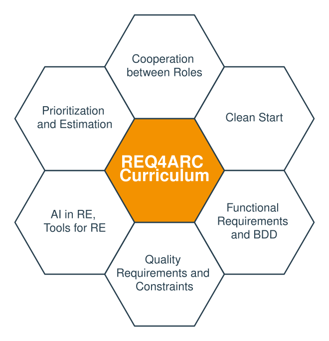

License and Copyright
© (Copyright), International Software Architecture Qualification Board e. V. (iSAQB® e. V.) 2026
The curriculum may only be used subject to the following conditions:
-
You wish to obtain the CPSA Certified Professional for Software Architecture Foundation Level® certificate or the CPSA Certified Professional for Software Architecture Advanced Level® certificate. For the purpose of obtaining the certificate, it shall be permitted to use these text documents and/or curricula by creating working copies for your own computer. If any other use of documents and/or curricula is intended, for instance for their dissemination to third parties, for advertising etc., please write to info@isaqb.org to enquire whether this is permitted. A separate license agreement would then have to be entered into.
-
If you are a trainer or training provider, it shall be possible for you to use the documents and/or curricula once you have obtained a usage license. Please address any enquiries to info@isaqb.org. License agreements with comprehensive provisions for all aspects exist.
-
If you fall neither into category 1 nor category 2, but would like to use these documents and/or curricula nonetheless, please also contact the iSAQB e. V. by writing to info@isaqb.org. You will then be informed about the possibility of acquiring relevant licenses through existing license agreements, allowing you to obtain your desired usage authorizations.
The abbreviation "e. V." is part of the iSAQB’s official name and stands for "eingetragener Verein" (registered association), which describes its status as a legal entity according to German law. For the purpose of simplicity, iSAQB e. V. shall hereafter be referred to as iSAQB without the use of said abbreviation.
Learning Goals Overview
-
LG 1-1: Understanding the need for requirements as basis for decision making
-
LG 1-2: Understanding responsibilities, roles and key activities
-
LG 1-3: Understanding the incremental nature of requirements elicitation ("Just in Time")
-
LG 1-4: Knowing the characteristics of good requirements and how they can be checked
-
LG 2-1: Understand the cooperation between architects and other roles concerning requirements
-
LG 2-4: Understand traceability from requirements to other artifacts
-
LG 3-1: Understanding the need for some (limited) upfront activities
-
LG 3-2: Understanding the need for (high level) vision and business goals
-
LG 3-3: Different options and notations for expressing visions and business goals
-
LG 3-4: The importance of different stakeholders and their influence on the product or system
-
LG 3-5: Different needs and values of different stakeholders ("value propositions")
-
LG 4-1: Understanding the difference between functional and other requirements
-
LG 4-3: Criteria for splitting coarse-grained functional requirements
-
LG 4-4: Decomposing or grouping requirements into value-adding processes
-
LG 4-8: Knowing when to stop refining functional requirements
-
LG 4-11: Know methods for elicitation of functional requirements
-
LG 5-1: Understanding the difference between quality and other requirements
-
LG 5-2: Understanding categories of qualities and constraints
-
LG 5-5: Specifying acceptance criteria for quality requirements
-
LG 5-6: Pragmatic alternatives to detailed acceptance criteria
-
LG 6-2: Understanding principles of Behavior-Driven Development (BDD)
-
LG 7-1: Understanding the potential and limitations of LLMs in requirements engineering
-
LG 7-2: Knowing use cases for LLMs in requirements engineering
-
LG 7-3: Checking and critically assessing AI-generated results
-
LG 10-1: Know examples of well-articulated requirements of various categories
Preface
IREB, the International Requirements Engineering Board, has been committed to educating professionals in requirements engineering for more than twenty years. Up to 2026, more than a hundred thousand people have acquired the CPRE FL certificate (Certified Professional for Requirements Engineering – Foundation Level).
As there are more than five million people working in IT worldwide, it is not surprising that there are still many development teams who neither have sufficient requirements engineering skills themselves, nor have access to specialists trained in requirements engineering – although they have to deal with requirements issues when developing and deploying software products.
This shortcoming is a good motivation for this iSAQB® Advanced Level module REQ4ARC. IREB welcomes this great module as it supports IREB’s mission to establish requirements engineering everywhere in IT. This module helps software architects and development teams to enter the world of professional requirements engineering. They will acquire a basic knowledge in requirements elicitation and management that will help in developing the right products with less guessing and less rework. Furthermore an awareness will be raised within development teams to ask for the right input before making critical architectural and design decisions.
We wish you success with this module and with your first steps in requirements engineering!
August 2026 |
Martin Glinz Chairman of the IREB Council |
Kim Lauenroth Chairman the Executive Board of IREB |
Introduction: General information about the iSAQB Advanced Level
What is taught in an Advanced Level module?
-
The iSAQB Advanced Level offers modular training in three areas of competence with flexibly designable training paths. It takes individual inclinations and priorities into account.
-
The certification is done as an assignment. The assessment and oral exam is conducted by experts appointed by the iSAQB.
Advanced modules can be attended independently of a CPSA-F certification.
What can Advanced Level (CPSA-A) graduates do?
CPSA-A graduates can:
-
independently and methodically design medium to large IT systems
-
in IT systems of medium to high criticality, assume technical and content-related responsibility
-
conceptualize, design, and document actions to achieve quality requirements and support development teams in the implementation of these actions
-
control and execute architecture-relevant communication in medium to large development teams
Requirements for CPSA-A certification
-
Successful training and certification as a Certified Professional for Software Architecture, Foundation Level® (CPSA-F)
-
At least three years of full-time professional experience in the IT sector; collaboration on the design and development of at least two different IT systems
-
Exceptions are allowed on application (e.g., collaboration on open source projects)
-
-
Training and further education within the scope of iSAQB Advanced Level training courses with a minimum of 70 credit points from at least three different areas of competence
-
Successful completion of the CPSA-A certification exam

Essentials
What does the module REQ4ARC convey?
Architects and development teams often get only mediocre requirements as input for their work. The goal of this module is to equip architects with enough requirements know-how, so that they can take educated architecture decisions, based on the real needs of stakeholders. They should either know how to elicit requirements (in agile, iterative settings), or at least know what to ask of others.

Curriculum structure and recommended durations
Note: The order of the chapters does not dictate the layout of a training course. Providers can adjust this for didactic reasons.
| Content | Teaching (min) | Exercises (min) |
|---|---|---|
1. Introduction and Motivation |
45 |
0 |
2. Cooperation between Roles |
45 |
60 |
3. Clean Start |
75 |
75 |
4. Handling Functional Requirements |
180 |
120 |
5. Handling Quality Requirements and Constraints |
90 |
90 |
6. Behavior-Driven Development |
60 |
0 |
7. AI in RE |
60 |
0 |
8. Prioritization and Estimation of Requirements |
45 |
30 |
9. Tools for Requirements Engineering |
45 |
0 |
10. Example |
60 |
0 |
Sum / Total: (1080 min / 18h) |
705 |
375 |
Duration, Teaching Methods and Further Details
The times stated above are recommendations. The duration of a training course on the REQ4ARC module should be at least 3 days, but may be longer. Providers may differ in terms of duration, teaching method, type and structure of the exercises, and the detailed course structure. In particular, the curriculum provides no specifications on the nature of the examples and exercises.
Licensed training courses for the REQ4ARC module contribute the following credit points towards admission to the final Advanced Level certification exam:
Methodical Competence: |
20 Points |
Technical Competence: |
0 Points |
Communicative Competence: |
10 Points |
Structure of the Curriculum
The individual sections of the curriculum are described according to the following structure:
-
Terms/principles: Essential core terms of this topic.
-
Teaching/practice time: Defines the minimum amount of teaching and practice time that must be spent on this topic or its practice in an accredited training course.
-
Learning goals: Describes the content to be conveyed including its core terms and principles.
This section therefore also outlines the skills to be acquired in corresponding training courses.
Supplementary Information, Terms, Translations
To the extent necessary for understanding the curriculum, we have added definitions of technical terms to the iSAQB glossary and complemented them by references to (translated) literature.
This curriculum is maintained publicly at github.com/isaqb-org/curriculum-req4arc. There you will always find the current online version and can submit comments, corrections or suggestions for improvement as an issue.
1. Introduction and Motivation
This topic introduces the need for sufficient requirements as a basis for making architectural decisions. Architects should be aware that they can either ask persons responsible for requirements engineering to deliver this input or they have to elicit and understand the requirements themselves.
However, there is no need for complete requirements, only for the subset necessary to make architectural decisions (called architecturally significant requirements). The rest can be elicited in an iterative and incremental manner, to be available just in time for decision making.
Teaching: 45 min |
Exercises: none |
1.1. Terms and concepts
Architecturally significant requirements (ASR), Agile Requirements Engineering, Requirements Quality Criteria, Quality Gateway
1.2. Learning Goals
LG 1-1: Understanding the need for requirements as basis for decision making
-
Know the need for good requirements, especially quality requirements seen from the perspective of software architecture
-
Know the key tasks for software architects which include clarifying and validating requirements and constraints
-
Know the concept of architecturally significant requirements (ASR), see also Just-in-Time Requirements
LG 1-2: Understanding responsibilities, roles and key activities
-
Know that there are different job titles for persons responsible for requirements (Business Analysts, Requirements Engineers, Product Owner)
-
Understand their relationship to architects and development teams.
-
Know key tasks in requirements engineering, including elicitation, documentation, validation and maintenance
LG 1-3: Understanding the incremental nature of requirements elicitation ("Just in Time")
-
Understand that requirements and architecture can (and should) be developed iteratively
-
Know that architects only need the requirements relevant for the design decisions at hand, at any point in time (Just-in-Time Requirements, see LG 1-1: Understanding the need for requirements as basis for decision making)
-
Understand that requirements can be elicited iteratively and incrementally
LG 1-4: Knowing the characteristics of good requirements and how they can be checked
-
Know the classic quality criteria for requirements: unambiguous, complete, consistent, verifiable, feasible, necessary, traceable [ISO-29148]
-
Know lightweight techniques for checking requirements, e.g. walkthroughs, inspections, checklists, and the Volere "quality gateway" [Volere]
-
Understand that development teams should use these criteria to check incoming requirements
Later chapters make these criteria and checking techniques concrete, e.g. acceptance criteria (LG 4-9: Acceptance criteria for functional requirements) and the Definition of Ready (LG 4-8: Knowing when to stop refining functional requirements).
2. Cooperation between Roles
Teaching: 45 min |
Exercises: 60 min |
In contrast to the waterfall model with explicit phases for requirements engineering and system/software architecture development all modern methods strive for a very close cooperation between architects and any role that is responsible for requirements engineering. Examples for such processes include design thinking ([Gerstbach]), lean startup ([Ries]), design sprints ([Banfield]) and many of the scaling frameworks in the agile world.
Architects should also understand different ways to capture and document requirements, from managing a product backlog to creating requirements documents - and the relationship of such requirements documents to architecture documentation.
2.1. Terms and concepts
Design Thinking ([Gerstbach] [Brown]), Design Sprint ([Banfield]), Lean Startup ([Ries]), Three Amigo Sessions ([Dinwiddie], [Smart-Amigo]), Twin Peaks Model ([Nuseibeh]), Discover-to-Deliver ([Gottesdiener]), Requirements Documentation, Traceability
2.2. Learning Goals
LG 2-1: Understand the cooperation between architects and other roles concerning requirements
-
Understand that iterative system development includes all roles involved in the development process
-
Know that architects constantly interact with business analysts and requirements persons, as well as developers and testers [Robertson-19]
LG 2-2: Know cooperative approaches to product development
-
Know the basic ideas of cooperative approaches like Discover to Deliver [Gottesdiener], Design Thinking [Gerstbach] [Brown], Lean Startup [Ries], Design Sprints [Banfield], Twin Peaks Model ([Nuseibeh])
-
Know Three Amigo Sessions (TAS) [Dinwiddie] [Smart-Amigo] as a collaborative format: the three roles "product owner" (or business analyst), "developer" and "tester" work together to discover requirements (see LG 4-11: Know methods for elicitation of functional requirements, LG 6-2: Understanding principles of Behavior-Driven Development (BDD))
-
Understand how such iterative approaches can be scaled to larger systems, that involve more than one development team, potentially geographically distributed.
LG 2-3: Understand requirements documentation
-
Know that in more formal situations written requirements specifications are essential
-
Know that oral communication (talking and discussing) is often more effective than writing
-
Understand the balance between writing and talking (requirements specification versus story cards)
LG 2-4: Understand traceability from requirements to other artifacts
-
Know what requirements tracing to architecture, source code, test, technical documentation means
-
Understand that requirements tracing is time-consuming and requires appropriate tool support
-
Understand that requirements tracing is sometimes mandatory, e.g. for safety-critical systems.
3. Clean Start
Teaching: 75 min |
Exercises: 75 min |
Although requirements engineering today should be performed in an iterative, incremental way there is a need for some up-front activities to guide detailed requirements elicitation and key architectural decision making. They are called a "clean start" for a project or product development. These mainly include:
-
Defining vision and goals
-
Identifying stakeholders
-
Setting the scope
-
Applying a “breadth before depth” approach to allow for early prioritization and planning.
3.1. Terms and concepts
Vision, Business Goals, Stakeholders, Scope, Context, SMART (Specific, Measurable, Achievable, Relevant, Time-bound), PAM (Purpose, Advantage, Metric), Personas, User Journey Maps
3.2. Learning Goals
LG 3-1: Understanding the need for some (limited) upfront activities
-
Understand that even with iterative development some upfront activities are necessary.
-
Know that explicit knowledge of visions, goals and relevant stakeholders is required so that the development team can take informed decisions about the system’s architecture.
-
Understand that an agreement about scope and context is required, especially about the interfaces between scope and context (i.e. the external interfaces of the product).
LG 3-2: Understanding the need for (high level) vision and business goals
-
Understand that visions or business goals are your highest level requirements, i.e. those requirements that are (hopefully) not changed during a project [Hruschka]
-
Understand that visions and goals should be quantified and made measurable to be able to check success in terms of business value.
-
Know how to systematically break down business goals using Impact Mapping [Adzic-Impact] into actors, the impacts (behavior changes) they should deliver, and concrete deliverables
LG 3-3: Different options and notations for expressing visions and business goals
-
Know various ways to define vision and goals (explicit goal statements, value propositions for different stakeholders, vision box, "news from the future")
-
Know mnemonics for vision or business goal statements (SMART, PAM)
LG 3-4: The importance of different stakeholders and their influence on the product or system
-
Know that stakeholders are the most important sources of requirements.
-
Understand that missing stakeholders may mean missing requirements.
-
Understand that architects should be aware that stakeholders need to be addressed in specific, adequate ways.
-
Know personas [Cooper] and user-journey maps [Kalbach] as artifacts to consolidate stakeholder needs, make them tangible for the team, and visualize them over time
-
Know that developers are also stakeholders.
-
Know about commonly forgotten stakeholders (e.g. legal, operations, support).
LG 3-5: Different needs and values of different stakeholders ("value propositions")
Understand that different stakeholders will have different needs and may differ in their opinions what is valuable in a product
Know:
-
that there are established classification schemes for stakeholders (e.g. Stakeholder Matrix)
-
that a prioritized stakeholder list helps to prioritize requirements by business value
-
architects have to identify and resolve goal conflicts between stakeholders' needs (see also LG 8-4: Identifying and resolving conflicting requirements for conflict-resolution techniques)
LG 3-6: Scoping and delimiting the context of the system
-
Distinguish between business and product scope
-
Know about the importance of external interfaces
-
Know different options and notations for expressing scope and context, i.e. context diagrams
4. Handling Functional Requirements
Teaching: 180 min |
Exercises: 120 min |
Stakeholders usually phrase their functional requirements on different levels of abstraction. Architects need to know how to handle these different granularities of requirements, how to relate coarser requirements to finer ones, how to split coarse requirements or group finer requirements to keep an overview.
This topic introduces criteria for splitting or grouping functional requirements in the large and in the small. Architects will understand when requirements are precise enough to be taken on by the development team.
Over the last decades many notations have been developed to express functional requirements. They range from textual representations to various graphical notations, but also include prototypes, mockups and specific examples in terms of scenarios. Strengths and weaknesses, as well as advantages and disadvantages will be discussed.
4.1. Terms and concepts
Functional Requirements, Use Case, Epic, Feature, Story, Scenario, Acceptance Criteria, Definition of Ready (DoR), INVEST, CCC-Rule, Prototypes, Mockups
4.2. Learning Goals
LG 4-1: Understanding the difference between functional and other requirements
-
Know the definition of functional requirements
-
Distinguish functional requirements from quality requirements and constraints
-
Know that business rules (e.g. calculations, policies, constraints on data) drive functional requirements, and that externalizing them from application logic is architecturally significant
LG 4-2: Hierarchies of functional requirements
-
Understand that (functional) requirements can be expressed on different levels of granularity, from coarse grained to very fine grained
-
Understand that architects at least need an overview of coarse grained functional requirements for planning and estimating
-
Know that not every functional requirement has to be detailed immediately (Just-in-Time principle, see LG 1-3: Understanding the incremental nature of requirements elicitation ("Just in Time"))
-
Know that such hierarchies can be represented as story-maps [Patton]
LG 4-3: Criteria for splitting coarse-grained functional requirements
Understand that many different criteria can be applied to decompose a system into smaller chunks, i.e. functional or feature-oriented decomposition, organizational decomposition, geographical decomposition, object-oriented decomposition, process-oriented decomposition or hardware-oriented decomposition.
LG 4-4: Decomposing or grouping requirements into value-adding processes
-
Know that process-oriented decomposition (business processes, use cases, stories, event process chains, …) is a proven approach to implement some parts early and postpone others, creating business value sooner.
-
Understand the first part of "INVEST" [Wake]: functional requirements should be "independent", "negotiable" and "valuable".
LG 4-5: Documenting value-adding processes
-
Know different notations to capture value-adding processes
-
Know how to write good stories (i.e. [Adzic-2014]: As a <role> I want to <functionality> so that <advantage>) [Hathaway]
-
Know how to capture processes in use case diagrams and use case specifications
-
Understand the difference between use cases and user stories
LG 4-6: Refining functional requirements
-
Know criteria for decomposing coarse level functional requirements [Lawrence], [Jacobson], [Hruschka]
-
Know that in agile requirements engineering that decomposed parts of a larger requirement still should offer business value.
LG 4-7: Documenting functional requirements
-
Understand that detailed functional requirements can be documented in various ways, e.g. in textual form, but also in many graphical forms. Graphical notations with well-defined syntax and semantics (e.g. activity diagrams, state models) can offer more precision and less room for misinterpretation than natural language — but informal or loosely defined diagrams can be just as ambiguous, or more so. Precise notations typically also require more expert knowledge to create and understand [HMF].
-
Know graphical models like activity diagrams, BPMN [BPMN], information models, state models and when to use which notation
LG 4-8: Knowing when to stop refining functional requirements
-
Understand that functional requirements are precise enough as soon as the development team has no more questions about their meaning
-
Understand the second part of "INVEST" [Wake]: "Estimable", "Small enough / sized appropriately" (stories further down the backlog may be larger than those about to be implemented next), "Testable"
-
Know the "Definition of Ready" (DoR) and how it supports the cooperation between stakeholders (e.g. between requirements engineers and architects)
LG 4-9: Acceptance criteria for functional requirements
-
Know that functional requirements should have acceptance criteria, i.e. testable criteria to unambiguously determine (after implementation) whether the requirement has been fulfilled
-
Understand the "CCC-Rule" [Jeffries]: card, conversation, confirmation. The acceptance criteria are the basis for confirmation.
-
Understand that acceptance criteria are the bridge to acceptance tests, effectively forming the per-requirement "definition of done"
LG 4-10: Understanding specification-by-examples
-
Understand that sometimes a couple of good examples for functional requirements are better than a bad abstraction [Adzic-2011]
-
Know that scenarios are examples for functional requirements
-
Know various notations to express scenarios
-
For more details see section 6 (BDD)
LG 4-11: Know methods for elicitation of functional requirements
-
Know that there are many different elicitation techniques that architects should be aware of, e.g. interviews, questionnaires, brainstorming sessions, Three Amigo Sessions (see LG 2-2: Know cooperative approaches to product development), knowledge crunching, event storming and many others
-
Know prototypes and mockups as an elicitation and validation technique, especially for UI/UX-related requirements: users often react more concretely to a visible artifact than to an abstract description [Snyder]
-
Know when to pick which elicitation technique to improve communication with stakeholders
5. Handling Quality Requirements and Constraints
Teaching: 90 min |
Exercises: 90 min |
This topic deals with the kinds of requirements that are often more important for architects than functional requirements: quality requirements and constraints. These two categories are often called non-functional requirements, although we recommend to avoid this term. Categorization schemata for quality requirements and constraints are discussed, as well as notations to capture them.
Similar to functional requirements qualities and constraints are often very vague at the beginning. Architect learn how to refine them, or how to derive functional requirements from qualities in order to make them more precise. Also quality requirements can be made more precise using scenario-based approaches. Last but not least: also quality requirements have to be made verifiable by adding acceptance criteria to them.
5.1. Terms and concepts
Quality Requirement, Constraint, Non-functional Requirement, Q42
5.2. Learning Goals
LG 5-1: Understanding the difference between quality and other requirements
-
Know a definition of quality requirements and constraints
-
Know that there is a very thin borderline between functional requirements and quality requirements, since qualities are sometimes made more precise by transforming them into functions.
LG 5-2: Understanding categories of qualities and constraints
-
Know checklists for quality requirements, quality standards, e.g. [Q42], [ISO-25010], Volere (see also [Robertson-24])
-
Know categories of constraints (organizational constraints, technical constraints, …)
-
Understand that architects don’t need all quality requirements and constraints early in the project, but have to find the most important ones, since they are architecture drivers and will influence very important architectural decisions (Just-in-Time principle, see LG 1-3: Understanding the incremental nature of requirements elicitation ("Just in Time"))
LG 5-3: Eliciting and specifying quality requirements
-
Knowing how to specify quality scenarios or textual specifications, including motivation ("why?")
-
Using checklists and categorization schemes to find the most important candidates of quality requirements
They should be able to select and adapt their approach to eliciting and specifying quality requirements based on the skills, motivation and available time of their stakeholders.
LG 5-4: Refining quality requirements
-
Know that quality requirements often start vague. Architects have various ways of adding precision
-
they could either use subcategories of the categorization schemes (user friendliness = ease of use and ease of learning)
-
they could find scenarios to express the intended meaning more precisely, or
-
they could suggest functional requirements that fulfil the intent of the quality requirement (i.e. suggest a role concept and the use of passwords to implement a security requirement)
-
-
Know that the Q42 quality model [Q42] provides practical guidance and pragmatic examples for specifying exact quality requirements
LG 5-5: Specifying acceptance criteria for quality requirements
-
Know that quality requirements also need acceptance criteria; the basic definition and the CCC rule apply unchanged (see LG 4-9: Acceptance criteria for functional requirements)
-
Know that acceptance criteria for quality requirements can often be specified by giving tolerances or thresholds, or allowing deviations for certain stakeholders (i.e. person who do not speak English are given 20% more time to achieve a result)
-
Know that some qualities can only be checked via statistical or operational observation over time rather than quantified acceptance criteria (see LG 5-6: Pragmatic alternatives to detailed acceptance criteria)
-
Know sources for examples of such acceptance criteria, like Q42
LG 5-6: Pragmatic alternatives to detailed acceptance criteria
-
Know that for some qualities it is hard to check their fulfilment right after implementation. Another way to check such qualities is statistical observation over time ("see if requirement is met") instead of quantified acceptance criteria.
-
Know that for UI-requirements e.g. usage-analytics can be used to check whether they are sufficiently well implemented.
6. Behavior Driven Development
Teaching: 60 min |
Exercises: none |
Behavior Driven Development (originally suggested by [North]) aims at closing the gap between specification of requirements and automated testing by advocating close collaboration among developers, QA and non-technical or business participants. With BDD, requirements are formulated in a way that can later be used to run automated tests. Thus, BDD is one example of executable specifications.
Therefore, Behavior Driven Development (or BDD) is a collaborative requirements discovery practice that uses conversations around concrete examples to build a shared understanding.
6.1. Terms and concepts
Behavior Driven Development (BDD), Automated Testing, Given-When-Then (GWT)
6.2. Learning Goals
LG 6-1: Knowing about the applicability and application domains for Behavior-Driven Development (BDD)
-
Know that BDD [Smart] originated from approaches and technologies like TDD (test-driven development) and ATDD (acceptance-test-driven development).
-
Know that various options exist to add precision to requirements
-
State models or activity models
-
given-when-then scenarios
-
-
Know that BDD is applicable for a broad range of IT-system types, e.g. information systems, business intelligence systems, mobile apps
LG 6-2: Understanding principles of Behavior-Driven Development (BDD)
-
Know that BDD is a collaborative requirements discovery practice that uses conversations around concrete examples to build a shared understanding of requirements.
-
Know that collaborative workshops and discussion formats, like Three Amigo Sessions (TAS), help in getting correct requirements (see LG 2-2: Know cooperative approaches to product development)
-
Know that concrete examples are a suitable way to help explore the problem domain, and they provide a basis for acceptance tests. Example mapping [Wynne] helps to find rules, open questions and identify new stories.
-
Know that BDD explains user requirements in features, breaks features down into stories and the stories into (executable) examples.
LG 6-3: Knowing Gherkin and Cucumber as examples for BDD
-
Understand that Given-When-Then is the executable form of acceptance criteria (see LG 4-9: Acceptance criteria for functional requirements): "Given" and "When" describe the starting situation and action, "Then" the expected, checkable outcome.
-
Know the Given-When-Then (GWT) syntax as proposed by Gherkin [Gherkin].
-
Know that Given-When-Then based formulations of requirements facilitate test automation.
-
Know that several tools exist to map Given-When-Then behavior specifications to the systems' source code (e.g. Cucumber [Cucumber], Reqnroll (formerly SpecFlow), Behave (Python), JBehave (Java)).
-
Optionally know examples of GWT specifications with the appropriate glue code for automatic execution.
7. AI in RE
Teaching: 60 min |
Exercises: none |
Artificial intelligence, in particular large language models (LLMs), is increasingly used to support requirements engineering. Because LLMs are tools for language and text, their strengths - generating, transforming, summarizing and comparing text - match many requirements engineering activities, from preparing elicitation to drafting, analyzing and consolidating requirements.
At the same time, LLMs have inherent limitations and risks that requirements engineers need to know and assess (see LG 7-1: Understanding the potential and limitations of LLMs in requirements engineering and LG 7-3: Checking and critically assessing AI-generated results). Requirements engineering therefore remains essentially a communicative activity with stakeholders: AI can prepare and follow up on such conversations, but it cannot replace them, and humans stay responsible for the resulting requirements (human-in-the-loop).
This chapter introduces the potential and the limitations of LLMs for requirements work, shows concrete use cases along the requirements activities covered in earlier chapters, and explains how to check and critically assess AI-generated results.
7.1. Terms and concepts
Large Language Model (LLM), Generative AI, Prompt, Context, Hallucination, Bias, Tacit Knowledge, Human-in-the-Loop, Confidentiality / Data Protection
7.2. Learning Goals
LG 7-1: Understanding the potential and limitations of LLMs in requirements engineering
-
Know that LLMs are tools for language and text. Their strengths (generating, transforming, summarizing and comparing text) match many activities in requirements engineering.
-
Understand that LLMs are non-deterministic: the same prompt can produce different results. Results are therefore not readily reproducible, which must be taken into account for repeated checks, reviews, and baselines.
-
Understand that plausible output is not necessarily correct. Hallucinations, missing domain and tacit knowledge, and bias limit the reliability of LLM results.
-
Know that providing custom context mitigates missing domain knowledge and reduces hallucinations, but does not eliminate them.
-
Understand that requirements engineering remains communication and negotiation with stakeholders. AI can prepare and follow up on such conversations, but cannot replace them.
-
Know that humans remain responsible for requirements (human-in-the-loop, mandatory reviews)
LG 7-2: Knowing use cases for LLMs in requirements engineering
-
Know that LLMs can support elicitation, e.g. by preparing interviews, generating questions, simulating stakeholders or personas, and supporting brainstorming
-
Know that LLMs can help to analyze requirements, e.g. find ambiguities, gaps and contradictions, or check requirements against quality criteria like INVEST, testability and acceptance criteria (see LG 4-8: Knowing when to stop refining functional requirements and LG 4-9: Acceptance criteria for functional requirements)
-
Know that LLMs can draft stories, use cases, quality scenarios and Gherkin examples (see sections 5 and 6), and can rephrase requirements between levels of abstraction and notations
-
Know that LLMs can support identifying architecturally significant requirements (ASRs) and refining vague quality goals into quality scenarios (see chapter 5)
-
Know that LLMs can summarize large sets of requirements and check glossaries and terminology for consistency
-
Understand that in all these use cases AI delivers drafts, critique or translations, while decisions remain with humans (see LG 7-1: Understanding the potential and limitations of LLMs in requirements engineering).
LG 7-3: Checking and critically assessing AI-generated results
-
Know how to check AI results systematically, e.g. against statements of stakeholders, the glossary and existing requirements
-
Know that the risks named in LG 7-1: Understanding the potential and limitations of LLMs in requirements engineering (e.g. hallucinations, bias) are particularly relevant when checking results, in addition to false precision as a further risk
-
Understand that LLMs shift the bottleneck from writing to checking: they effortlessly produce large amounts of plausible text, but quantity is not quality – the review effort grows.
-
Understand that requirements often contain confidential company knowledge (confidentiality, data protection, intellectual property)
-
Know that beyond confidentiality there are further organizational and regulatory constraints, such as company policies on approved tools and regulations like the EU AI Act.
-
Understand that good results require explicit context, like role, domain and quality criteria
8. Prioritization and Estimation of Requirements
Teaching: 45 min |
Exercises: 30 min |
Iterative and incremental development strives for implementing those requirements first that deliver high business value. In order to do that architects should make sure that requirements are ordered by business value. This allows to concentrate on the ones with highest business value and postpone the refinement of others until later. But architects should be aware that business value can have a lot of different meanings to different stakeholders. This section discusses different kinds of value.
The other prerequisite for implementing some requirements earlier than others is to have estimates in order to determine how long it will take to implement the requirements and get indicators on where maybe more requirements work is necessary.
8.1. Terms and concepts
Business value, risk, ranking, prioritization, affinity estimation, story points, function points, WSJF, MoSCoW-prioritization
8.2. Learning Goals
LG 8-1: Understanding different kinds of business value
-
Understand that different stakeholders may see different value in requirements. Some of them may be interested in short turn revenue, others in improvement of customer satisfaction, or quick time-to-market. Others might want to reduce the risk for the rest of the development, or create a platform for longer term cost savings. [McGreal]
-
Know different methods for expressing value, e.g. MoSCoW-prioritization [Clegg] [MoSCoW], defined ranges of values, linear sorting of all requirements, weighted factor methods, cost of delay [Reinertsen], …
-
Know Impact Mapping [Adzic-Impact] as a technique to trace requirements and deliverables back to their contribution to business goals, and value them accordingly (see LG 3-2: Understanding the need for (high level) vision and business goals)
LG 8-2: Ordering requirements by business value
-
Know different strategies for ordering and prioritization, e.g. weighted shortest job first (WSJF) [Reinertsen] [SAFe], defer risk, risk-first …
-
Know how to handle dependencies between requirements when ordering requirements
-
Know mechanism to split requirements in order to avoid dependencies
LG 8-3: Estimating requirements
-
Understand the need for estimating requirements, also as an indicator to potentially refine and decompose larger requirements when they cannot be estimated well enough yet.
-
Understand the difference between absolute estimates (in person days, costs, …) versus relative estimates (e.g. story points)
-
Know some relative estimation techniques like T-Shirt-sizing, Planning Poker (with Fibonacci values) [Grenning] [cohn]
-
Know different estimation techniques, e.g. function points [Albrecht], story points, affinity estimation, wall estimation, etc.
LG 8-4: Identifying and resolving conflicting requirements
-
Understand that different stakeholder needs can lead to conflicting requirements, and that resolving them often translates into architectural decisions
-
Know techniques for conflict resolution, e.g. prioritization (see LG 8-2: Ordering requirements by business value), trade-off and utility analysis, escalation to decision makers, and direct negotiation with the affected stakeholders
-
Know that architects should focus conflict resolution primarily on conflicts affecting architecturally significant requirements (LG 1-1: Understanding the need for requirements as basis for decision making)
9. Tools for Requirements Engineering
Teaching: 45 min |
Exercises: none |
In order to capture and communicate requirements teams can use different tools, from very informal cards on the wall to very sophisticated requirements management tools. This section gives an overview of how to physically handle requirements documentation. It is not intended to go into details of any of these tools.
9.1. Learning Goals
LG 9-1: Categories of suitable tools
Know different kinds of requirements tools (cards, wikis, modeling tools, issue-trackers, etc.)
LG 9-2: Advantages and disadvantages of tool categories
-
Know heuristics when to use which kind of tool for which kind of system
-
Understand the strengths and weaknesses of different tool categories
10. Example
Teaching: 60 min |
Exercises: none |
Within each licensed training there must be at least one example of well written architecturally significant requirements presented, discussed and evaluated.
The example may differ for each training provider or depend on the interest of the participants. Therefore, details for the example are not specified by iSAQB.
10.1. Learning Goals
LG 10-1: Know examples of well-articulated requirements of various categories
LG 10-2: Know (counter-)examples, like ambiguous, inconsistent and contradicting requirements of various categories
Glossary
- Acceptance Criteria
-
(adapted from IREB): A set of conditions (typically associated with a requirement) that must be fulfilled by any implementation. Such conditions may be, for example, expected outcomes for sample input data or expected speed or volume to be achieved.
- Agile Requirements Engineering
-
(adapted from IREB): a cooperative, iterative and incremental approach with four goals:
-
knowing the relevant requirements at an appropriate level of detail (at any time during system development),
-
achieving sufficient agreement about the requirements among the relevant stakeholders,
-
capturing (and documenting) the requirements according to the constraints of the organization,
-
performing all requirements related activities according to the principles of the agile manifesto.
-
- ASR
-
Architecturally Significant Requirements are the subset of requirements that have a strong impact on architectural decisions (those requirements that especially shape or influence architectural decisions.) See also →Just-in-Time Requirements.
- ATDD
-
Acceptance Test Driven Development
- BDD
-
(Behavior Driven Development) An agile software development process that encourages collaboration among developers, QA and non-technical or business participants in a software project. It encourages teams to use conversation and concrete examples to formalize a shared understanding of how the application should behave, resulting in executable specifications, e.g. in → Gherkin syntax.
- Business Goal
-
A desired state of affairs (that a stakeholder wants to achieve). Goals describe intentions of stakeholders. They may conflict with one another.
- Constraint
-
A requirement that limits the solution space beyond what is necessary for meeting the given functional requirements and quality requirements.
- Context
-
The term is used differently across disciplines:
-
(Requirements Engineering, adapted from IREB [IREB-Glossary]): The part of a system’s environment that is relevant for understanding the system and its requirements. A context boundary separates this relevant part from the environment.
-
(Software architecture, arc42): In context and scope, the focus is on the external interfaces and neighbors (neighboring systems and users) the system communicates with, distinguished into business and technical context.
-
(Large Language Models): The body of information (tokens) an →LLM takes into account when generating a response, i.e. the →Prompt, the prior conversation and any supplied documents.
-
- Definition of Ready
-
(DoR) (adapted from IREB): a set of criteria that a requirement must meet prior to being accepted into an upcoming iteration.
- Epic
-
(adapted from IREB): A high-level, abstract description of a stakeholder need which has to be addressed in the product being developed. Epics are typically larger than what can be implemented in a single iteration.
- Feature
-
A service that fulfills a stakeholder need. Each feature includes a benefit hypothesis and acceptance criteria. [Leffingwell] [SAFe]
- Functional Requirements
-
A requirement concerning a result of behavior that shall be provided by a function of a system (or of a component or service).
- Gherkin
-
Domain-specific language for writing →BDD scenarios in →GWT syntax.
- Goals
-
→ Business Goal.
- GWT
-
Given, When, Then: Semi-structured way to write down test cases or behavior specifications. It was invented by Dan North as part of →BDD (behavior-driven development).
- Just-in-Time Requirements
-
The principle that architects do not need a complete set of requirements upfront, only the subset relevant for the decisions at hand (see →ASR), elicited as needed for each iteration.
- LLM
-
(Large Language Model) An AI model trained on very large amounts of text that processes and generates natural language by predicting, step by step, the most likely next token. Its output is plausible but not necessarily correct. The input it takes into account forms its →Context.
- Non-functional Requirement
-
(NFA) A → quality requirement or a constraint.
- PAM
-
The acronym for Purpose, Advantage, Metric helps to concentrate on important aspects when writing vision or business goal statements
- Prompt
-
The textual input (instruction, question or example) used to elicit a response from an →LLM. The prompt and additional →Context strongly determine the quality of the output.
- Quality Requirement
-
A requirement that pertains to a quality concern that is not covered by functional requirements.
- Scenario
-
-
A description of a potential sequence of events that lead to a desired (or unwanted) result.
-
An ordered sequence of interactions between partners, in particular between a system and external actors.
-
- Scope
-
The range of things that can be shaped and designed when developing a system.
- SMART
-
(acronym, see [Doran], for Specific, Measurable, Achievable, Relevant, Time-bound) Originally (Doran, 1981) Specific, Measurable, Assignable, Realistic, Time-related – the "A" is understood as either "Achievable" or "Assignable" depending on the source. A SMART goal helps with setting and specifying goals. A SMART goal incorporates all of these criteria to help focus efforts, therefore increasing the chances of achieving that goal.
- Stakeholders
-
A person or organization that has a (direct or indirect) influence on a system’s requirements. Indirect influence also includes situations where a person or organization is impacted by the system.
- (User) Story
-
A description of a need from a user’s perspective together with the expected benefit when this need is satisfied. User stories are typically written in natural language using a given phrase template.
- Use Case
-
A description of the interactions possible between actors and a system that, when executed, provide added value.
Use cases specify a system from a user’s (or other external actor’s) perspective: every use case describes some functionality that the system must provide for the actors involved in the use case.
- Vision
-
The Vision is a description of the future state of the Solution under development. It reflects Customer and stakeholder needs, as well as the Feature and Capabilities, proposed to meet those needs. [Leffingwell] [SAFe]
References
This section contains references that are cited in the curriculum.
A
-
[Adzic-2011] Adzic, Gojko: Specification by Example. Manning, 2011. More info: https://gojko.net/books/specification-by-example/
-
[Adzic-2014] Adzic, Gojko / Evans, David: Fifty Quick Ideas to Improve Your User Stories. 2014. https://leanpub.com/50quickideas
-
[Adzic-Impact] Adzic, Gojko: Impact Mapping: Making a Big Impact with Software Products and Projects. Provoking Thoughts, 2012. https://www.impactmapping.org/
-
[Albrecht] Albrecht, Allan J.: Measuring Application Development Productivity. Proceedings of the Joint SHARE/GUIDE/IBM Application Development Symposium, 1979, pp. 83-92.
B
-
[Banfield] Banfield, Richard: Design sprint: a practical guidebook for building great digital products, O’Reilly, 2016
-
[BPMN] Object Management Group (OMG): Business Process Model and Notation (BPMN), Version 2.0.2, 2013. https://www.omg.org/spec/BPMN/2.0.2/ (also published as ISO/IEC 19510:2013, https://www.iso.org/standard/62652.html)
-
[Brown] Brown, Tim: Design Thinking, Harvard Business Review, June 2008.
C
-
[Clegg] Dai Clegg and Richard Barker (1994). Case Method Fast-Track: A RAD Approach. Addison-Wesley.
-
[Cooper] Cooper, Alan: The Inmates Are Running the Asylum: Why High-Tech Products Drive Us Crazy and How to Restore the Sanity. Sams, 1999.
-
[Cucumber] Cucumber: BDD testing and executable specifications. https://cucumber.io/
D
-
[Dinwiddie] George Dinwiddie. The Three Amigos - All For One - One For All. Better Software Nov/Dec 2011, vol 13, issue 6, pp 24-27, Online (archived, PDF only): https://www.stickyminds.com/sites/default/files/magazine/file/2013/3971888.pdf
-
[Doran] Doran, G. T.: "There’s a S.M.A.R.T. Way to Write Management’s Goals and Objectives", Management Review, 70(11), 1981, pp. 35–36.
G
-
[Gerstbach] Gerstbach, Ingrid: Design Thinking im Unternehmen: Ein Workbook für die Einführung von Design Thinking, GABAL Verlag, 2016 (in German)
-
[Gherkin] Cucumber: Gherkin Reference. https://cucumber.io/docs/gherkin/reference/
-
[Gottesdiener] Gottesdiener, Ellen: Discover to Deliver: Agile Product Planning and Analysis, EGB Consulting, 2012
-
[Grenning] Grenning, James: Planning Poker or How to avoid Analysis Paralysis while Release Planning. Renaissance Software Consulting, 2002. https://wingman-sw.com/papers/PlanningPoker-v1.1.pdf
H
-
[Hathaway] Hathaway, Angela + Tom: Getting and Writing IT-Requirements in a Lean and Agile World. Self-published, https://www.businessanalysisexperts.com/books-ebooks-business-analysis-career/book-getting-writing-it-requirements-lean-agile/
-
[Hruschka] Hruschka, Peter: Business Analysis und Requirements Engineering, Hanser Verlag, 4th Edition 2026 (in German). English version available on Leanpub: https://leanpub.com/business_analysis_requirements_engineering
-
[HMF] Hruschka, Peter, Meuten, Markus and Fritsch, Dirk: The Practical Guide to Agile Requirements Engineering. Leanpub, 2024, https://leanpub.com/agile_requirements_enginering
I
-
[IREB] IREB: Handbook Advanced Module “RE@Agile”, https://cpre.ireb.org/de/downloads-and-resources/downloads/category:re-agile
-
[IREB-Glossary] Glinz, Martin (IREB): A Glossary of Requirements Engineering Terminology (CPRE Glossary), version 2.2.0, 2025. https://cpre.ireb.org/en/downloads-and-resources/glossary
-
[iSAQB-Foundation] iSAQB Foundation Level Curriculum: https://public.isaqb.org/curriculum-foundation/
-
[ISO-25010] ISO/IEC 25010:2023: Systems and software engineering — Systems and software Quality Requirements and Evaluation (SQuaRE). https://www.iso.org/standard/78176.html
-
[ISO-29148] ISO/IEC/IEEE 29148:2018: Systems and software engineering — Life cycle processes — Requirements engineering. https://www.iso.org/standard/72089.html
J
-
[Jacobson] Dr. Ivar Jacobson, Ian Spence, Kurt Bittner: Use-Case 2.0: The Guide to Succeeding with Use-Cases. Online: https://www.ivarjacobson.com/publications/white-papers/use-case-20-e-book
-
[Jeffries] Jeffries, Ron: Essential XP: Card, Conversation, Confirmation, 2001. https://ronjeffries.com/xprog/articles/expcardconversationconfirmation/
K
L
-
[Lawrence] Richard Lawrence, Peter Green: The Humanizing Work Guide to Splitting User Stories, https://www.humanizingwork.com/the-humanizing-work-guide-to-splitting-user-stories/
-
[Leffingwell] Leffingwell, Dean: Agile Software Requirements: Lean Requirements Practices for Teams, Programs, and the Enterprise. Addison-Wesley, 2011.
M
-
[McGreal] McGreal, Don / Jocham, Ralph: The Professional Product Owner: Leveraging Scrum as a Competitive Advantage. Addison-Wesley, 2018
-
[MoSCoW] Agile Business Consortium: MoSCoW Prioritisation, DSDM Project Framework Handbook. https://www.agilebusiness.org/dsdm-project-framework/moscow-prioritisation.html
N
-
[North] North, Dan: Introducing Behavior Driven Development, https://dannorth.net/blog/introducing-bdd/
-
[Nuseibeh] B. Nuseibeh, “Weaving Together Requirements and Architectures,” Computer, vol. 34, no. 3, 2001, pp. 115–119.
P
-
[Patton] Patton, Jeff (with Economy, Peter): User Story Mapping: Discover the Whole Story, Build the Right Product. O’Reilly, 2014. https://www.jpattonassociates.com/story-mapping/
Q
-
[Q42] The arc42 community (lead by Gernot Starke and Peter Hruschka): Q42 - The arc42 Quality Model, open-source, online https://quality.arc42.org
R
-
[Reinertsen] Reinertsen, Donald G.: The Principles of Product Development Flow: Second Generation Lean Product Development. Celeritas Publishing, 2009.
-
[Robertson-24] Robertson,J./Robertson,S.: Mastering the Requirements Process: Getting Requirements Right. Addison Wesley; 4th edition 2024. https://www.volere.org/mastering-the-requirements-process-getting-requirements-right/
-
[Robertson-19] Robertson, J. /Robertson, S.: Business Analysis Agility. Addison Wesley, 2019
S
-
[SAFe] Scaled Agile, Inc.: SAFe (Scaled Agile Framework), online. https://scaledagileframework.com/
-
[Smart] Smart, J.F. / Molak, J.: BDD in Action: Behavior-Driven Development for the whole software lifecycle. Manning, 2nd edition 2023. https://www.manning.com/books/bdd-in-action-second-edition
-
[Smart-Amigo] Smart, J.F.: The Anatomy of a Three Amigo requirements discovery Session. https://johnfergusonsmart.com/three-amigos-requirements-discovery/
-
[Snyder] Snyder, Carolyn: Paper Prototyping: The Fast and Easy Way to Design and Refine User Interfaces. Morgan Kaufmann, 2003.
-
[Starke-Hruschka] Starke,G + Hruschka, P: Communicating Software Architectures: lean, effective and painless documentation. Leanpub https://leanpub.com/arc42inpractice
V
-
[Volere] Robertson, James & Suzanne (Atlantic Systems Guild): Volere Requirements. https://www.volere.org/
W
-
[Wake]: Wake, Bill: INVEST in good stories and SMART Tasks, xp123.com/Articles/invest-in-good-stories-and-smart-tasks, 2003
-
[Wiegers-Beatty] Wiegers, Karl / Beatty, Joy: Software Requirements. Microsoft Press, 3rd edition, 2013.
-
[Wynne] Wynne, Matt: Introducing Example Mapping: https://cucumber.io/blog/bdd/example-mapping-introduction/